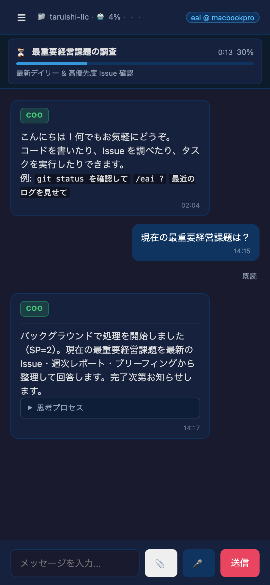

A.
Edge-First
エッジに分散するエージェントノード
Desktop / Server / Connect の 3 形態で、エージェントノードを 手元のデバイスから現場のサーバーまで分散配置します。
Internet of Agents
モノがつながる IoT から、エージェントが協調する IoA へ。
01 / Mission
樽石デジタル技術研究所合同会社（TDRI）は、Internet of Agents（IoA）の実現プラットフォームを提供します。エージェントが安全に走り、互いに委譲し合う世界を、ソフトウェアとしてのインフラから設計しています。
IoT が「モノをつないでデータを送る」ネットワークだったとすれば、IoA は「エージェント同士が依頼・委譲・交渉を行う」自律協調のネットワークです。中央クラウドだけに依存せず、エッジに分散した AI ノードがその場で考え、その場で決め、必要なときだけ協調する。TDRI はそのための実行基盤を、EntreprenAIs プラットフォームとして研究開発しています。
02 / Approach
A.
エッジに分散するエージェントノード
Desktop / Server / Connect の 3 形態で、エージェントノードを 手元のデバイスから現場のサーバーまで分散配置します。
B.
グリーン電力で持続稼働する推論
太陽光とバッテリーの余剰電力時間帯にローカル LLM 推論を集中させ、 エージェントの稼働を化石燃料から切り離していきます。
C.
エージェント同士の自律協調
A2A プロトコルでエージェント同士が依頼・委譲・交渉を自律的に行い、 人間は方針と価値観の決定に集中できる構造をつくります。

Product Preview
自然言語の問いかけに、エージェントが自律的に調査タスクを起動し、 進捗カードでリアルタイムに状態を返す。これが EntreprenAIs の A2A チャット UX です。
03 / Roadmap
個人のワークステーションを「経営ノード」として接続する EntreprenAIs Connect の Phase 1 / Phase 2 を進行中。エッジに最初のエージェントノードを根付かせています。
グリーン電力余剰時間帯に推論を寄せる Zero Emission Option の PoC、 エージェント間プロトコル A2A の標準化、チャットルーム UX の整備を進めます。
Carbon-Aware にスケジュールされる Edge-First K8s クラスタと、 エージェントが越境して協調する IoA メッシュ、そしてエージェント市場へ。
04 / Contact
IoA / Zero Emission Option に関する共同研究・導入相談・採用は、代表者の LinkedIn からご連絡ください。
LinkedIn — 樽石将人※ 本サイトは TDRI のコーポレートサイトです。返信にはお時間をいただく場合があります。専用問い合わせメールアドレスは準備中です。